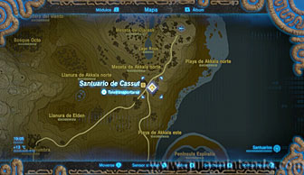
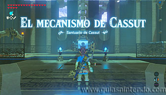
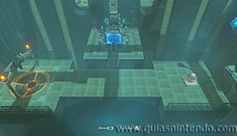
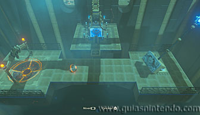
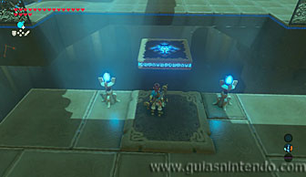
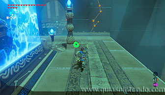
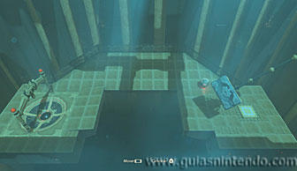
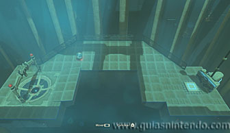
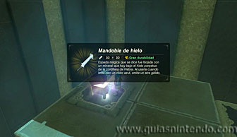

Este santuario está disponible desde que llegas a la región de la torre de Akkala, está situado al suroeste del laboratorio.

Dentro debes usar el control por movimiento del mando. Para ello, acércate al mecanismo que hay a la derecha según entras y muévelo inclinándolo primero a la derecha y rápidamente a la izquierda para golpear la esfera con el gran palo.

Si lo haces bien la esfera se colará en el agujero y se activará una plataforma que te permitirá llegar al santuario. Sin embargo, si no subes a altar y sigues por el camino que hay tras él, encuentras otro puzle del mismo estilo.

Si completas esta segunda prueba, activarás otra plataforma para alcanzar un cofre. El truco está en golpear la esfera de tal modo que la dirijas con fuerza hacia la parte superior, como esta zona tiene una pendiente, hará que la esfera caiga hacia el agujero.

El cofre contiene un mandoble de hielo. Ahora lo único que te queda por hacer es dirigirte al altar para conseguir el símbolo de valía correspondiente.
